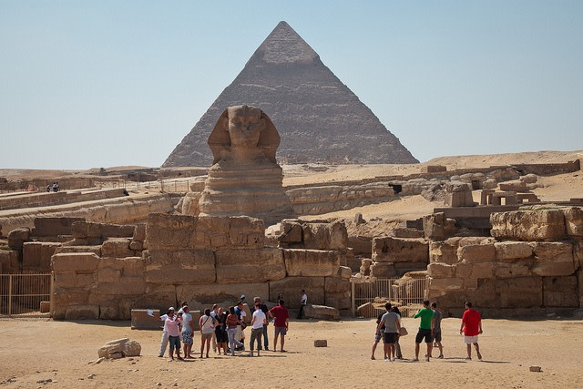
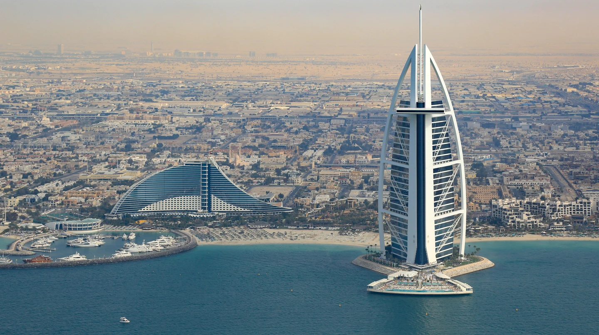

Welcome to our page.
Bookmark this website for the Best Travel recommendations.

Japan
Japan is an island nation in East Asia, known for its unique blend of ancient traditions and modern innovation. Tokyo, the capital city, is a bustling metropolis and a global hub of technology, fashion, and pop culture. Visitors can explore iconic neighborhoods like Shibuya, Shinjuku, and Akihabara, as well as historic sites such as the Imperial Palace and Meiji Shrine. Kyoto is renowned for its well-preserved traditional architecture, serene temples, and beautiful gardens. The city is home to iconic landmarks like Kinkaku-ji (Golden Pavilion), Fushimi Inari Shrine, and Arashiyama Bamboo Grove. Osaka is known for its vibrant street food scene, bustling shopping districts like Dotonbori, and attractions like Osaka Castle and Universal Studios Japan. Mount Fuji, an iconic symbol of Japan, is a popular destination for hiking and offers breathtaking views. The nearby Fuji Five Lakes region is known for its scenic beauty. Hiroshima is significant for its history, particularly the Peace Memorial Park and Museum, which commemorates the atomic bombing of the city during World War II. Other notable destinations include Nara with its friendly deer and ancient temples, the historic city of Kamakura, and the hot springs of Hakone. Japan is famous for its traditional arts, such as tea ceremonies, calligraphy, and geisha culture. Visitors can experience these cultural traditions firsthand.
Switzerland
Description of Destination 1.
Switzerland is a landlocked country in Central Europe, renowned for its stunning Alpine landscapes, charming cities, and outdoor recreational activities. Zurich, Geneva, and Lucerne are among the most popular cities to visit in Switzerland. They offer a mix of cultural attractions, historic sites, and picturesque views. The Swiss Alps provide opportunities for skiing, snowboarding, hiking, and mountaineering. Famous mountain destinations include Zermatt, Interlaken, and St. Moritz. The country is known for its efficient transportation system, including scenic train rides like the Glacier Express and Bernina Express. Switzerland is also famous for its watchmaking, Swiss chocolates, and cheeses like Gruyère and Emmental.
Egypt
Description of Destination 1.
Egypt is a transcontinental country located in North Africa, famous for its ancient civilization, iconic monuments, and the Nile River. Cairo, the capital city, is home to the Giza Plateau, where the Pyramids of Giza and the Sphinx stand as remarkable ancient wonders. Luxor and Aswan are renowned for their archaeological sites and ancient temples such as Karnak, Luxor Temple, and Abu Simbel. The Nile River offers opportunities for cruising, witnessing rural life, and exploring historic sites like the Valley of the Kings
The U.A.E
Description of Destination 1.
The United Arab Emirates (U.A.E.) is a country located in the Middle East, known for its modern cities, luxury resorts, and cultural heritage. Major cities in the U.A.E. include Dubai, Abu Dhabi, and Sharjah, each offering unique attractions and experiences. Dubai is famous for its iconic skyscrapers, luxurious shopping malls, and vibrant nightlife. Visitors can enjoy activities such as desert safaris, dune bashing, and exploring traditional souks (markets). Abu Dhabi, the capital of the U.A.E., boasts architectural marvels like the Sheikh Zayed Grand Mosque and cultural landmarks like the Louvre Abu Dhabi. The U.A.E. offers a range of outdoor activities such as beach relaxation, water sports, and golfing. Visitors can also indulge in world-class dining and shopping experiences
Kenya

Kenya is a country located in East Africa, known for its diverse wildlife, stunning landscapes, and vibrant culture. Nairobi, the capital city, is a bustling metropolis with a mix of modern and traditional attractions, including the Nairobi National Park and the Karen Blixen Museum. The Maasai Mara National Reserve is a popular destination for wildlife enthusiasts, offering opportunities to witness the Great Migration and spot the "Big Five" (lion, elephant, buffalo, leopard, and rhinoceros). Other notable attractions include Mount Kenya, Amboseli National Park, Lake Nakuru National Park, and the coastal city of Mombasa with its beautiful beaches and historic sites.